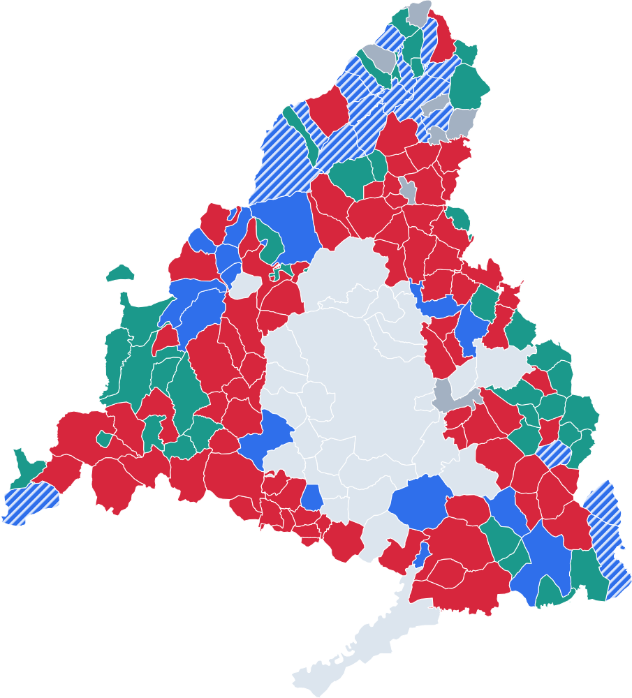
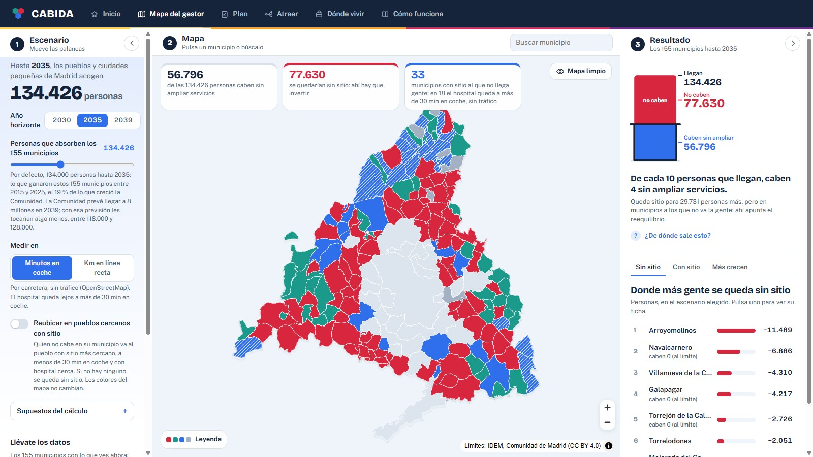
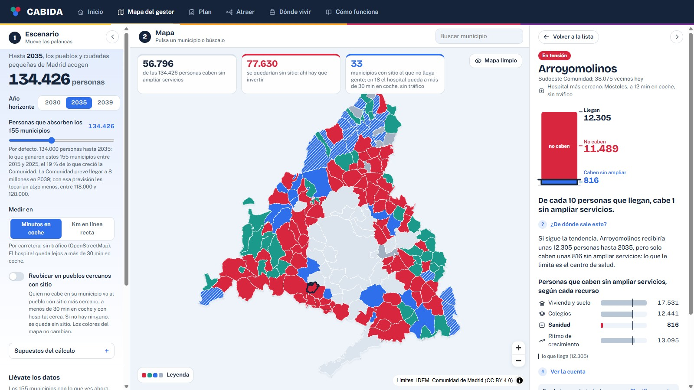
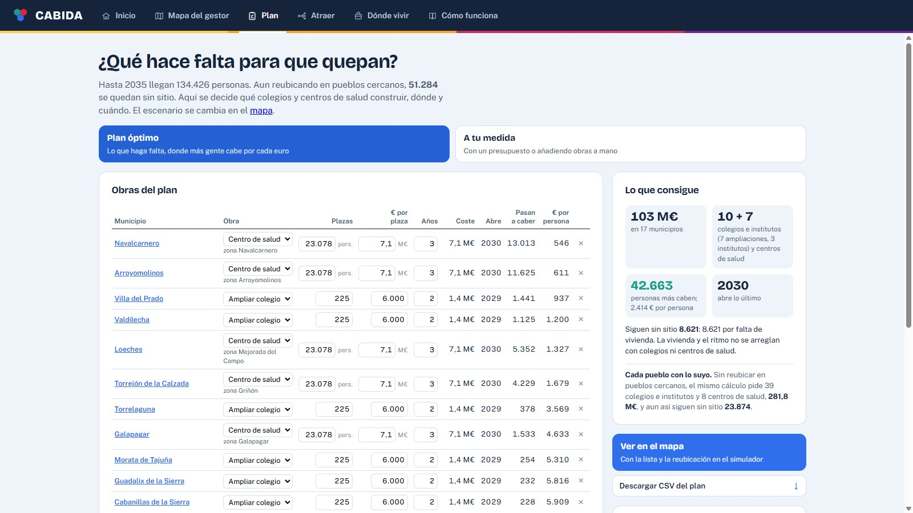
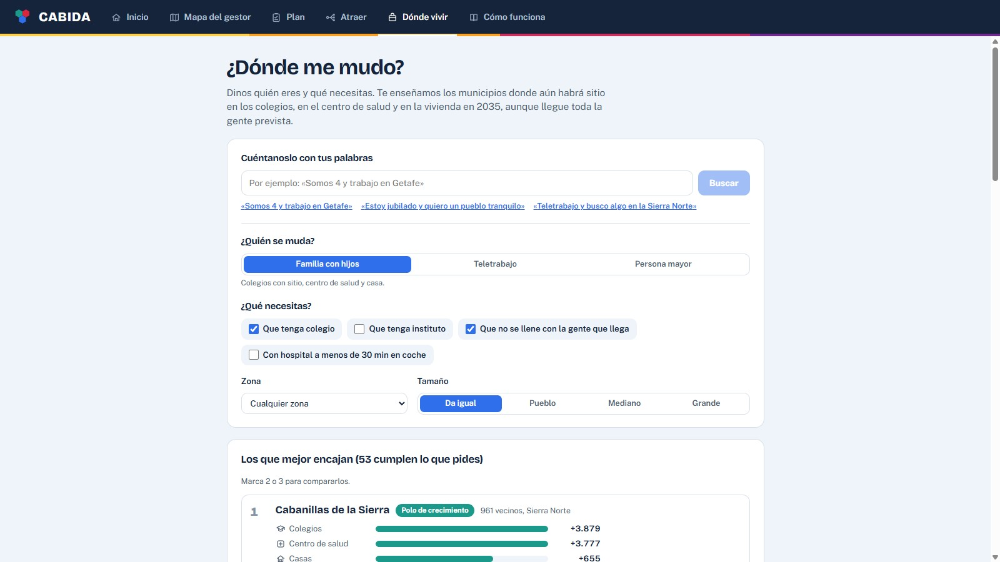

¿Dónde cabe la gente que llega a los pueblos de Madrid?

En cada pueblo manda el límite más bajo de cuatro. Estos son los que frenan a los 155:




De cada 100 personas. El error ponderado (44,4 % frente a 64,1 %) cuenta dos veces a cada persona mal colocada: una donde sobra y otra donde falta. Verlo en la web.